1. Number system
Exercise 1.1
1. (i) 9 (ii) 26 (iii) 69 (iv) 104 (v) 50 (vi) 101 (vii) 40 (viii) 1
2. (i) 6.0 (ii) 21.81 (iii) 35.001
3. (i) 123.4 (ii) 20.0 (iii) 910.6
4. (i) 87.76 (ii) 301.51 (iii) 80.00
5. (i) 24.400 (ii) 1251.235 (iii) 61.002
Exercise 1.2
1.

Ans 0.76
2.
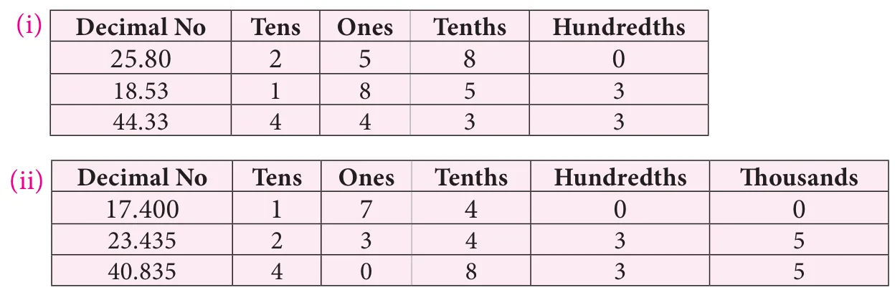
3.
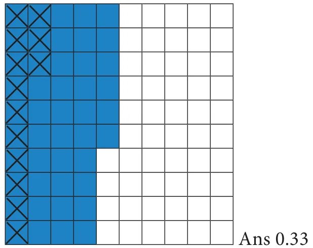
4.
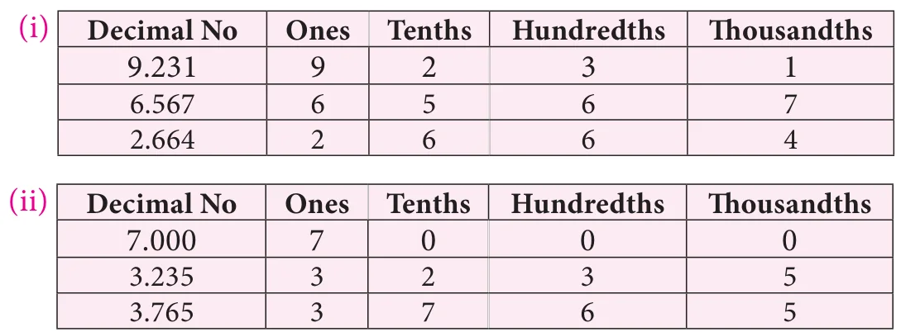
5. 14.01 6. 4.650 kg 7. 6.387 8. 18.1 9. ₹ 2.60 10. 11.4 cm
Objective type questions
11. (iii) 1.83 12. (ii) 4.17 13. (iv) 2.16 14. (i) 1.57 15. (i) 128.89
Exercise 1.3
1. (i) 1.5 (ii) 22.50 (iii) 200.8 (iv) 0.27 (v) 3171.21 (vi) 2.8
2. 23.80 sq.cm 3. 360.24 sq.cm
4. (i) 25.7 (ii) 5.1 (iii) 12536.7 (iv) 3451 (v) 6273.5 (vi) 7.0 (vii) 3 (viii) 400
5. 497 cm 6. ₹ 30
7. (i) 1.08 (ii) 5.23 (iii) 107.48 (iv) 0.036 (v) 14.306 (vi) 0.051 (vii) 10.5525 (viii) 1.0101 (ix) 110.011
Objective type questions
8. (ii) 0.107 9. (i) 20.8 10. (iii) 53.0 cm
Exercise 1.4
1. (i) 0.2 (ii) 0.18 (iii) 1.02 (iv) 3.08 (v) 0.094 (vi) 10.34 (vii) 99.4
2. (i) 0.57 (ii) 9.37 (iii) 0.09 (iv) 30.1301 (v) 0.083 (vi) 0.0062
3. (i) 0.007 (ii) 0.038 (iii) 0.493 (iv) 4.6385 (v) 0.003 (vi) 0.274
4. (i) 0.0189 (ii) 0.00087 (iii) 0.0493 (iv) 0.0003 (v) 0.3824 (vi) 0.0938
5. (i) 8 (ii) 9.9 (iii) 14.7 (iv) 0.19 (v) 9 (vi) 1.69
6. 1.91 kg 7. 64 km 8. 650 sq.ft 9. ₹ 53.80 10. 2.8
Objective type questions
11. (iv) 11.2 12. (ii) 67.0 13. (ii) 0.1
Exercise 1.5
1. 36.06 m 2. 1.976 kg 3. 20.24 l 4. 9 5. 0.3924 kg
6. (i) 120.198 (ii) 33.258
7. 15 8. 2376.1 m 9. 0.0523 10. 69 pages
Challange Problems
11. 0.267 km 12. Mala travelled 0.5 km more than Anbu.
13. ₹ 3421.25 14. 463.53 km/hour 15. 325.08 km
2. Percentage and Simple Interest
Exercise 2.1
1. (i) \(\frac{58}{100}\), 0.58, 58% (ii) \(\frac{53}{100}\), 0.53, 53% (iii) \(\frac{25}{50}\), 0.50, 50% (iv) \(\frac{17}{25}\), 0.68, 68% (v) \(\frac{15}{30}\), 0.50, 50%
2. (i) 50% (ii) 50% (iii) \(31\frac{4}{16}\,\%\) (iv) \(68\frac{12}{16}\,\%\)
3. White colour – 50% ; Black colour – 50%
4. (i) 72% (ii) 270% (iii) 75% (iv) 225% (v) 160%
5. 87.2%
6. (i) \(\frac{21}{100}\) (ii) \(\frac{931}{1000}\) (iii) \(\frac{151}{100}\) (iv) \(\frac{13}{20}\) (v) \(\frac{4}{625}\)
7. 83.33% 8. \(\frac{12}{25}\) 9. ₹ 1,875
Objective type questions
10. (iii) 25% 11. (i) 60% 12. (iv) \(\frac{7}{10{,}000}\)
Exercise 2.2
1. (i) 0.21 (ii) 0.931 (iii) 1.51 (iv) 0.65 (v) 0.0064
2. (i) 28.2% (ii) 151% (iii) 109% (iv) 71% (v) 85.8%
3. 0.75 4. 0.705 5. 0.86 6. 675%
7. 156% 8. 25%
Objective type questions
9. 1.425 10. 0.5% 11. 470%
Exercise 2.3
1. 20% 2. 10 liters 3. ₹ 1334 4. ₹ 240 5. 75%
6. 30% 7. Mathametics 85% 8. 600 9. 8%
10. Education - ₹ 6,000 and 33.33%; Savings – ₹ 3,000 and 16.66%; other expenses – ₹ 9,000 and 50%
Exercise 2.4
1. ₹ 6,300 2. I = ₹ 1,120 ; A = ₹ 9,120 3. ₹ 56,000
4. 10% 5. 3 years 6. 2 years 7. 7% 8. ₹ 12,500
Objective type questions
9. (i) ₹ 500 10. (iii) ₹ 100 11. (i) 10%
Exercise 2.5
1. 10% 2. 60% 3. 58.33% 4. 70%
5. 74% cam swim; 26% canot swim 6. 20%
7. ₹ 75 8. ₹ 1,770 9. 4% 10. 800%
11. ₹ 800 12. 6 years 13. 8 years
Challange Problems
14. 20% ; 80% 15. 77.77% 16. 58.33% 17. 32%
18. 16 19. 7.225 kg 20. 47.82% 21. 70 l
22. \(16\frac{2}{3}\) 23. 1,31,220 24. 12% 25. 7%
26. 10% 27. 25%
3. Algebra
Exercise 3.1
1. (i) \(p^{2}-2pq+q^{2}\) (ii) \(x^{2}-25\) (iii) \((x-2)\) and \((x-2)\) (iv) \(2\times 2\times 2\times 3\times a\times b\times c\times c\)
2. (i) True (ii) False (iii) True (iv) True.
3. (i) \(2\times 2\times 2\times 3\times a\times b\times b\times c\times c\)
(ii) \(2\times 2\times 3\times 3\times x\times x\times x\times x\times y\times y\times z\)
(iii) \(2\times 2\times 2\times 7\times m\times n\times n\times p\times p\)
4. (i) \(x^{2}+10x+21\) (ii) \(36a^{2}+24a-45\) (iii) \(16x^{2}+32xy+15y^{2}\) (iv) \(p^{2}q^{2}+15pq+56\)
5. (i) \(4x^{2}+20x+25\) (ii) \(b^{2}-14b+49\) (iii) \(m^{2}n^{2}+6mnp+9p^{2}\) (iv) \(x^{2}y^{2}y^{2}-2xyz+1\)
6. (i) \(p^{2}-4\) (ii) \(9b^{2}-1\) (iii) \(16-m^{2}n^{2}\) (iv) \(36x^{2}-49y^{2}\)
7. (i) 2,601 (ii) 10,609 (iii) 9,96,004 (iv) 2,209 (v) 89,991 (vi) 9,99,900 (vii) 2,652
8. \((a-b)^{2}\) 10. 64
11. (i) \((z+4)(z-4)\) (ii) \((3+2y)(3-2y)\) (iii) \((5a+7b)(5a-7b)\) (iv) \((x^{2}+y^{2})(x+y)(x-y)\)
12. (i) \((x-4)(x-4)\) (ii) \((y+10)(y+10)\) (iii) \((6m+5)(6m+5)\) (iv) \((8x-7y)(8x-7y)\) (v) \((a+3b+c)(a+3b-c)\)
Objective type questions
13. (ii) 6 14. (iii) \(-625\) 15. (i) \((x-3)(x-3)\)
16. (iv) \(xy\)
Exercise 3.2
1. (i) \(y\le x\) (ii) \(x+6\ge y+6\) (iii) \(x^{2}\ge xy\) (iv) \(-xy\le -y^{2}\) (v) \(x-y\ge 0\)
2. (i) False (ii) False (iii) True (iv) False
3. (i) \(x = 1, 2, 3, 4, 5, 6\) and 7
(ii) \(x = 1, 2, 3, 4, 5\) and 6
(iii) \(a = 0, 1, 2, 3, 4\) and 5
(iv) \(x = 7, 8, 9, 10, \ldots\)
(v) \(x = -5, -4, -3, -2\) and \(-1\)
4. (i) \(k = -4, -3, -2, -1, 0, 1, 2, \ldots\)
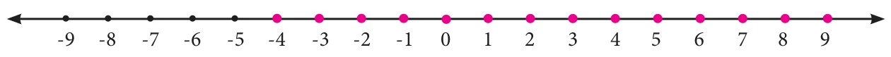
(ii) \(y = -7, -6, -5, -4, -3, -2\) and \(-1\)
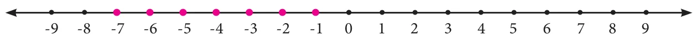
(iii) \(x = 1, 2, 3, 4, 5, 6, 7\) and 8
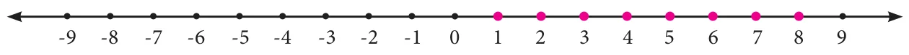
(iv) \(m = \ldots -3, -2, -1, 0, 1, 2, 3, 4, 5, 6\)
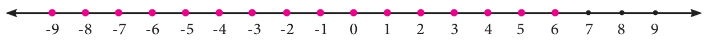
5. The artist can buy \(3\le x\le 6\) brushes or \(x = 3, 4, 5\) and 6 brushes.
Objective type questions
6. (iv) 3, 4, 5 and 6 7. (i) 1 and 2 8. (iii) 6 9. (ii) \(-4\le x\le 0\)
Exercise 3.3
1. (i) 24.01 (ii) 10020.01 (iii) 3.99
2. \((2x+3y)(2x-3y)\)
3. (i) \(9p^{2}+3p(q+r)+qr\) (ii) \(9p^{2}-q^{2}\)
4. 900 sq.m
Challenge problems
6. \((a-b)(a+b)\) 7. \(x^{4}-y^{4}\) 8. \(-60xy\)
9. (i) \(4ab\) (ii) \(2(a^{2}+b^{2})\)
10. 225 sq.m
11. (i) \(n = 3, 4, 5, 6, \ldots\)
(ii) \(x = 0, 1, 2, 3, \ldots\)
(iii) \(x = -3, -2, -1, 0, 1, 2, 3, 4, 5\) and 6
4. Geometry
Exercise 4.1

2. (i) 3→, 4↑ (ii) 3←, 3↑ (iii) 4←, 4↓ (iv) 2→, 2↓
3.

4.


5.
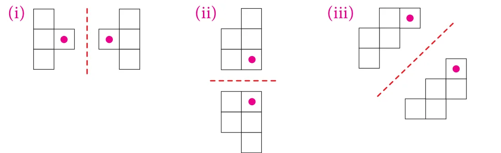
6.
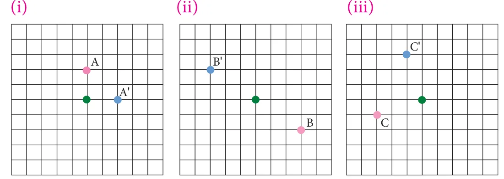

7. Reflection
8. Rotation
9. Translation
10. a. 7→, 2↓
b. No. It will be landed on the island.
c. 5→, 3↓
11. (i) Translation (ii) Reflection about horizontal line (iii) Reflection about vertical line (iv) Rotation about the heel
12. (i) Image of \(\angle L\) is \(\angle L'\), Image of \(\angle M\) is \(\angle M'\),
Image of \(\angle N\) is \(\angle N'\), Image of \(\angle O\) is \(\angle O'\)
Image of vertex L is L', Image of vertex M is \(\angle M'\)
Image of vertex N is \(\angle N'\), Image of vertex O is O'
(ii) Corresponding sides are LM and L'M', MN and M'N', NO and N'O' and OL and O'L'
13. 3→ 1↓
Objective type questions.
14. (ii) Rotation 15. (iii) Reflection 16. (i) Translation
17. (ii) Rotation 18. (i) Translation 19. (iii)
Exercise 4.3
Miscellaneous Problems
1. For first move: 2→, 2↓; For second move: 5←, 5↓
2. Pawn – 1↑ or 2↑
Rook – 1 to 8 ↑
Knight – 2→, 1↑ or 2←, 1↑ or 1→, 2↑ or 1←, 2↑
Bishop – 1→, 1↑ or 2→, 2↑ or 3→, 3↑ or 4→, 4↑ or 5→5↑1←, 1↑ or 2←, 2↑ or 3←, 3↑ or 4←, 4↑ or 5←5↑
Queen – 1 to 8 ↑, 1→, 1↑ or 2→, 2↑ or 3→, 3↑ or 4→, 4↑ or 5→, 5↑ or 1←, 1↑ or 2←, 2↑ or 3←, 3↑ or 4←, 4↑ or 5←5↑
King – 1→ or ← or ↑
3. (i) More brains category shows translation
(ii) More brains category shows reflection
4. (i) 120cm→, 210cm↓ (ii) 270cm←, 330cm↑ (iii) 150cm→
5. (i) rotation (ii) reflection (iii) translation (iv) reflection (v) rotation (vi) reflection (vii) rotation. (viii) translation
challenge Problems
6. 2←, 1↓ and then 1←, 2↓ (or) 2←, 1↓ and then 1←, 2↓
7. (i) Translation 3←, 5↑ and \(90^{\circ}\) counter clockwise rotation about the green point and translates 5←, 2↓
(ii) Translation 2← \(90^{\circ}\) counter clockwise rotation about the green point and translates 2←, 2↓
8.

5. Statistics
Exercise 5.1
1. (i) 5.5 (ii) 3,525 (iii) 6 (iv) 0
2. 13 3. (i) 35 (ii) 47 (iii) 10
4. Y = 152 ; Height of two students are 152 cm and 156 cm
5. 240 6. 5 7. 24
Objective type questions:
8. (i) Mean 9. (ii) 16 10. (i) 16 11. (iii) 14
Exercise 5.2
1. 2 2. 31 3. 25 and 36 4. 15
Objective type questions:
5. (i) blue 6. (iv) No mode 7. (iii) 2 and 1
Exercise 5.3
1. (i) 25 (ii). 11
2. 34 3. 7 4. 37.5 ; 36
Objective type questions:
5. (iii) 2 6. (iv) 32 7. (i) 6
Exercise 5.4
1. 82 2. 15.5 3. 2, 3 and 5 4. 13 ; 13
5. 2 ; 3 6. 8; No mode.
Challenge Problems
7. 8 8. 17 ; 10 ; 18 9. \(-0.5\) 10. 12.9 ; 11.2
6. Information Processing
Exercise 6.1
1. (i) (e) (ii) (c) (iii) (a) (iv) (b) (v) (d)
2.
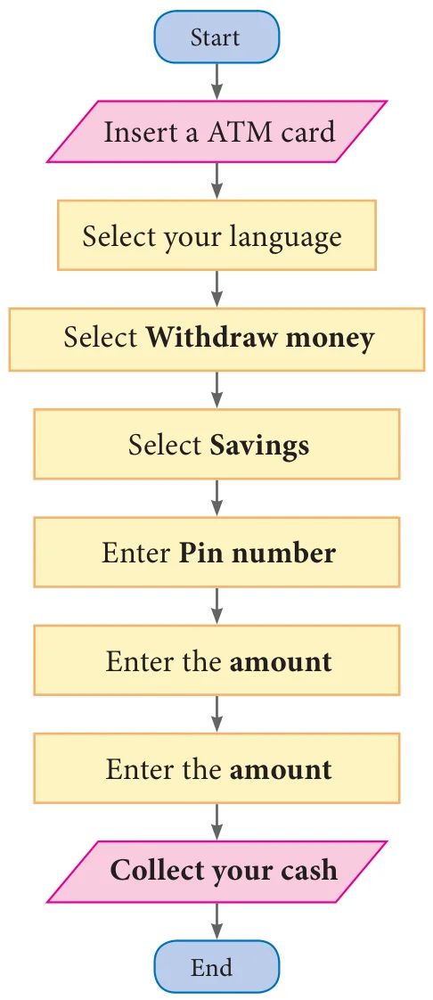
3.
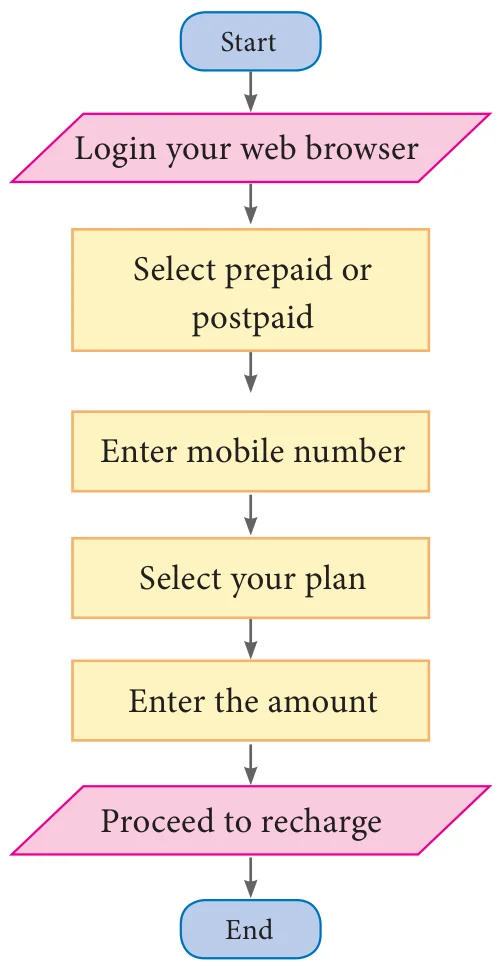
4.
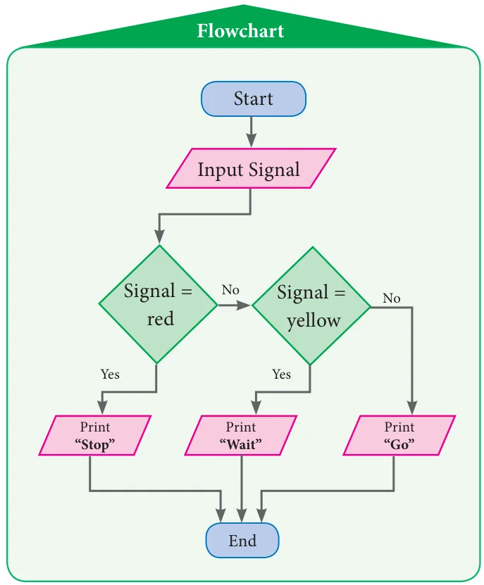
5.

6. (i)
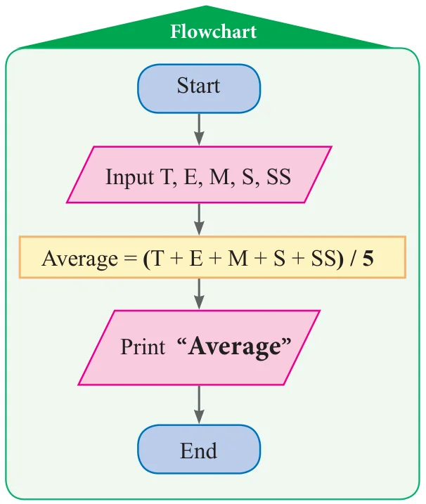


Upper Primary Mathematics - Class 7, Term-III
Text Book Development Team
Reviewer
• Dr. R. Ramanujam, Professor, Institute of Mathematical Sciences, Taramani, Chennai.
Academic Advisor
• Dr. Pon.Kumar, Joint Director (Syllabus), SCERT, Chennai.
Domain Expert
• Dr. C. Annal Deva Priyadarshini, Asst. Professor, Department of Mathematics, Madras Christian College, Chennai
Coordinator
• D. Joshua Edison, Lecturer, DIET, Kaliyampoondi, Kanchipuram Dt.
Content Writers
• M.K. Lalitha, B.T. Asst, GGHSS, Katpadi, Vellore District
• G.P. Senthilkumar, B.T.Asst, GHS, Eraivankadu, Vellore District.
• M.J. Shanthi, B.T.Asst, PUMS, Kannankurichi, Salem Dt.
• M. Palaniyappan, B.T.Asst, Sathappa GHSS, Nerkuppai, Sivagangai Dt.
• A.K.T. Santhamoorthy, B.T.Asst, GHSS, Kolakkudi, Tiruvannamalai Dt.
• P. Malarvizhi, B.T.Asst, Chennai High School, Strahans Road, Pattalam, Chennai.
• A.Ravi, B.T.Asst (Maths), Govt High school, Ayilam, Vellore district.
Content Reader
• Dr. M.P. Jeyaraman, Asst Professor, L.N. Govt Arts College, Ponneri – 601 204.
ICT Coordinator
• D. Vasuraj, PGT & HOD (Maths), KRM Public School, Chennai
Art and Design Team
Layout Artist
• Jerald Wilson
Artist
• Prabu Raj D.T.M., Drawing Teacher, GHS, Manimangalam Kanchipuram Dt.
Inhouse Qc
• Rajesh Thangappan
• Mathan Raj • Adison raj
Coordinator
• Ramesh munusamy
Typist
• A. Palanivel, SCERT, Chennai.
• M. Sathya, Perungalathur, Chennai
EMIS Technology Team
• R.M. Satheesh, State Coordinator Technical, TN EMIS, Samagra Shiksha.
• K.P. Sathya Narayana, IT Consultant, TN EMIS, Samagra Shiksha
• R. Arun Maruthi Selvan, Technical Project Consultant, TN EMIS, Samagra Shiksha
This book has been printed on 80 GSM Elegant Maplitho paper
Printed by offset at :
Notes